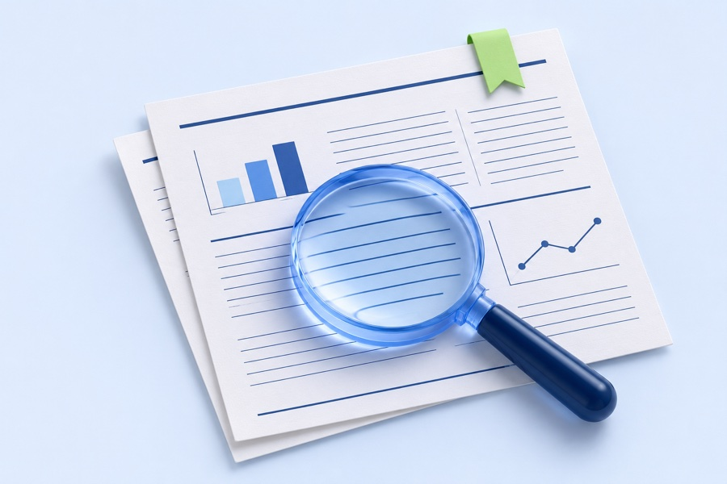

월·목 오전 7시 기준
보험 뉴스 브리핑
보험업 주요 이슈와 우리 부서가 확인할 일을 살펴보세요.

주요 회차
발행된 회차를 함께 살펴보세요.
주요 이슈
코딩 · 회차 조회 / LLM · 기사와 부서 업무를 대조해 작성한 발행본
뉴스 확인
기사 한 건의 관련 보도를 찾거나, 한 주 동안의 보험 뉴스를 모아보세요.
- 뉴스 수집
- 부서 판단
- 요약과 검토
코딩 · 수집과 중복 정리 / Jev · 분류 / GPT · 요약
부서별 검토 기준
담당 산하별로 업무를 찾고, 우리 부서가 확인할 뉴스와 자료를 살펴보세요.
조건에 맞는 부서가 없습니다. 다른 키워드나 업무 분야를 선택해 주세요.
부서명과 소속은 교보생명 경영조직도에서 확인했습니다. 업무 분야와 검토 기준은 이 서비스의 뉴스 분류용입니다.
코딩 · 부서 기준 저장 / Jev · 기사와 업무의 관련성 판단
서비스 소개
조장 엘조사 카밀라CFO 루트노가다 한들
뉴스에서 부서의 확인할 일까지
생명보험·손해보험 소식을 담당 산하별로 읽고, 부서에 필요한 확인 자료와 검토 항목을 출처와 함께 살펴보는 대학원 프로젝트입니다.
- 코딩 · 수집
- 한국 시간으로 기간을 나누어 뉴스 검색 RSS를 조회합니다. 참고 매체의 제목·발행일·링크를 확인하고 같은 링크와 같은 매체의 동일 제목을 정리합니다.
- Jev · 판단
- 보험업 관련성과 입력한 부서 역할은 예·아니오 확률(Noul)로, 보고 가치는 0~3점(Score)으로 평가합니다. 관련성 0.80 이상, 점수 1.5 이상, 점수 신뢰도 0.65 이상이면 주요 후보입니다. 경계 사례는 검토 필요로 표시합니다. 기사마다 판단에 사용한 자료를 표시합니다.
- LLM · 보고서
- 현재 발행본은 원문을 대조해 작성했습니다. 링크·주차별 확인 결과에서 GPT 요약을 누르면 수집한 기사 제목을 바탕으로 주요 이슈와 출처를 정리합니다. 결과는 PDF로 내려받을 수 있습니다.
정기 브리핑 기준 목~일 기사는 월요일, 월~수 기사는 목요일 오전 7시 기준으로 묶습니다. 주차별 확인은 원하는 주의 기사를 직접 조회하는 기능입니다. 자동 실행의 활성화 여부와 수동 조회는 별개입니다.
업무에서 편리해지는 점
반복 검색 줄이기
매체별 검색과 중복 정리를 한 번에 하고 관련 부서부터 읽습니다.
보고서 작성 부담 줄이기
공통 사실과 출처는 재사용하고, 담당 산하별 검토 항목을 함께 확인합니다.
확인 업무에 바로 착수
왜 봐야 하는지와 확인할 자료를 연결해 부서 간 문의를 줄입니다.
워크다이어트 효과 계산
이용 인원과 절감 시간을 바꾸어 예상 업무 여력을 살펴보세요. 아래 수치는 가정이며 실측 성과가 아닙니다.
월 22근무일 · 중앙 편집 하루 25분 절감 · 실현율 60% 가정. 인건비 환산액은 현금 절감액과 다릅니다. 실제 현금 효과는 초과근무·외주·구독비의 감소에서 운영비와 구축비를 차감해 확인해야 합니다.
주차를 선택해 뉴스 확인